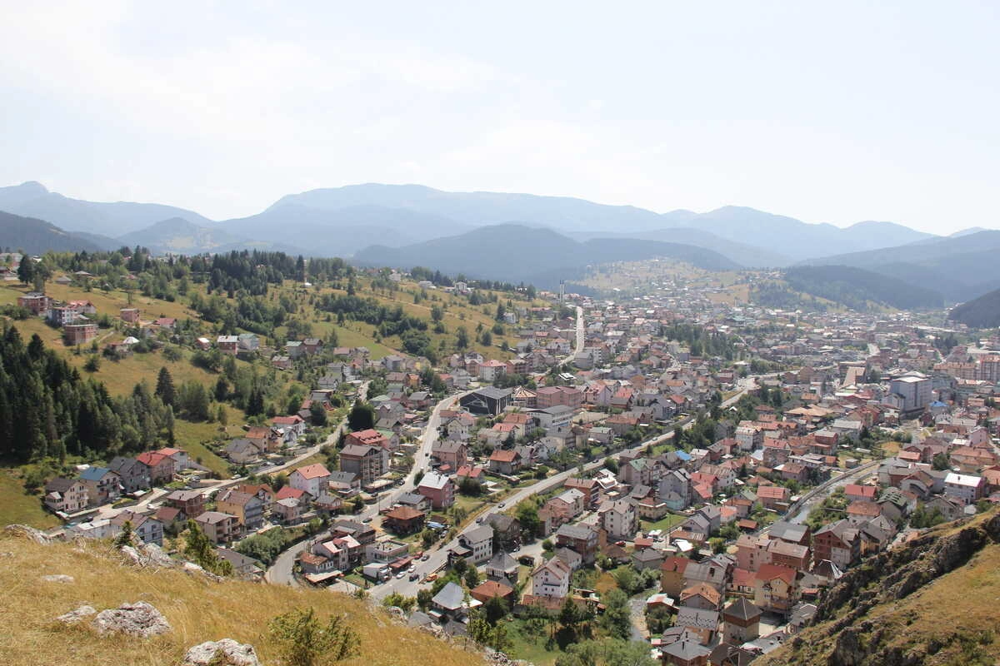
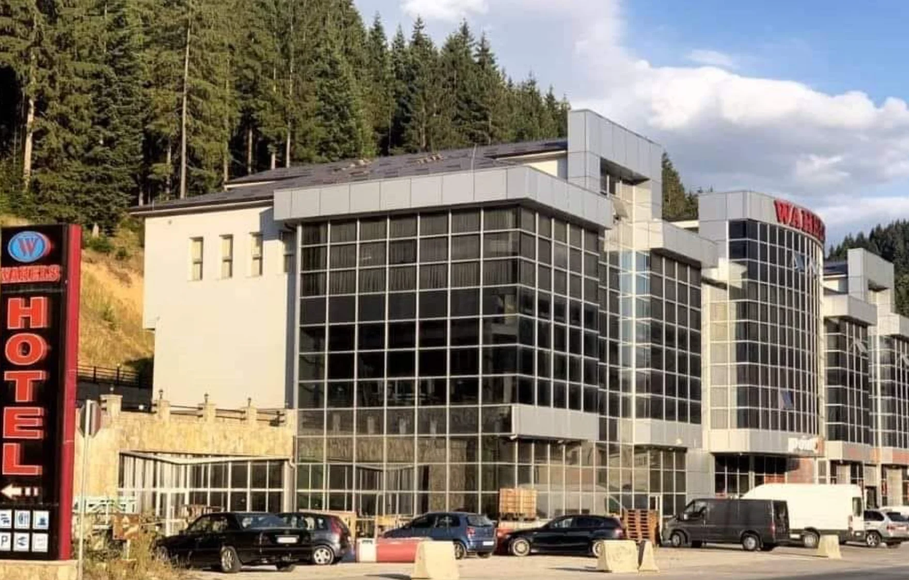
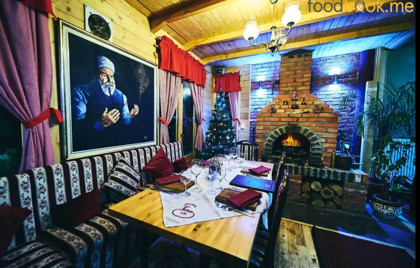
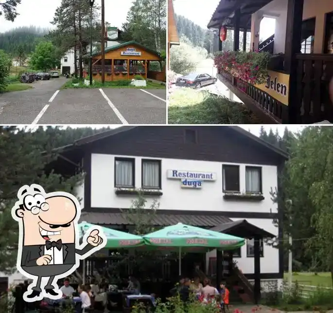
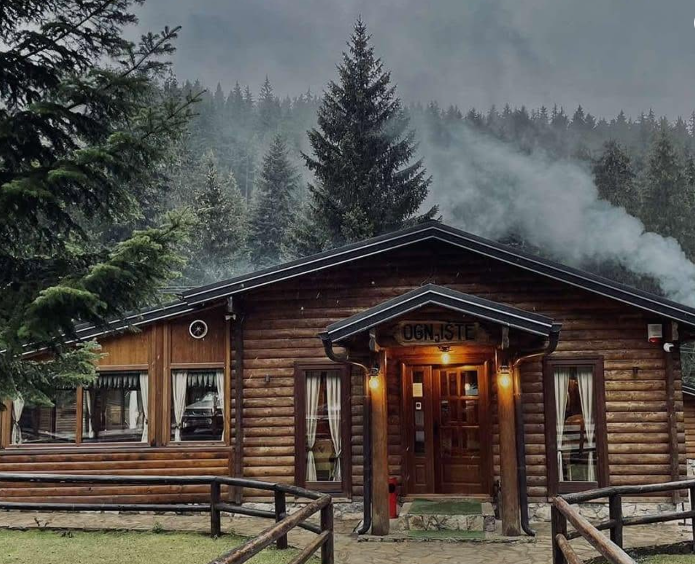
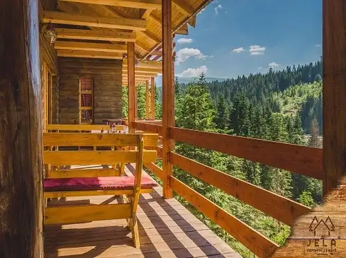
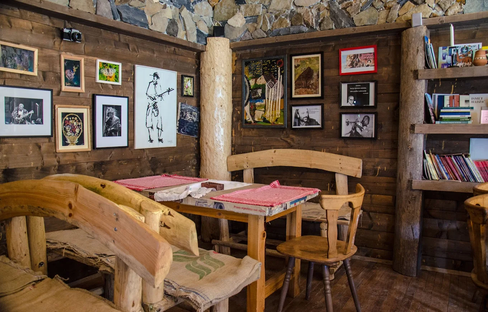
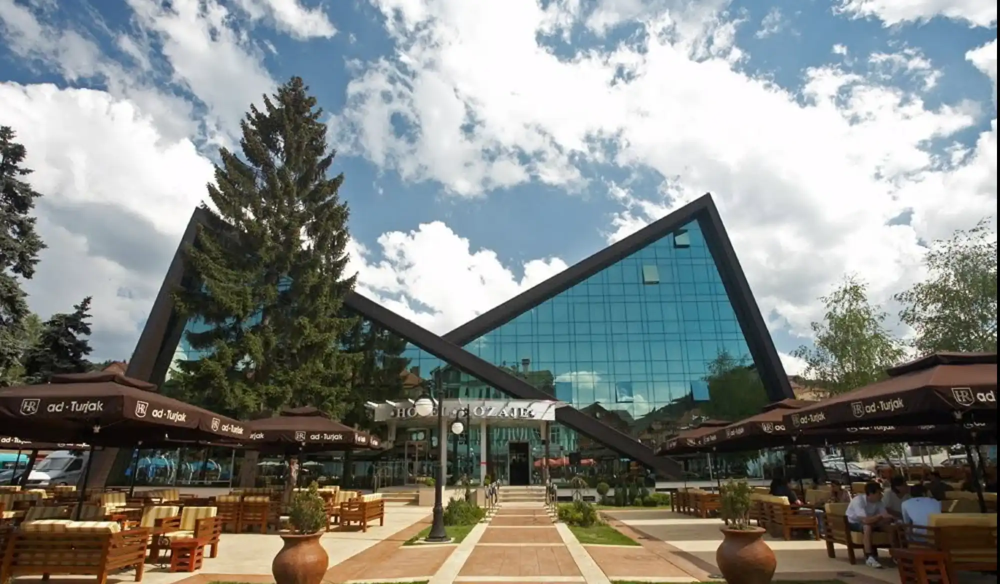
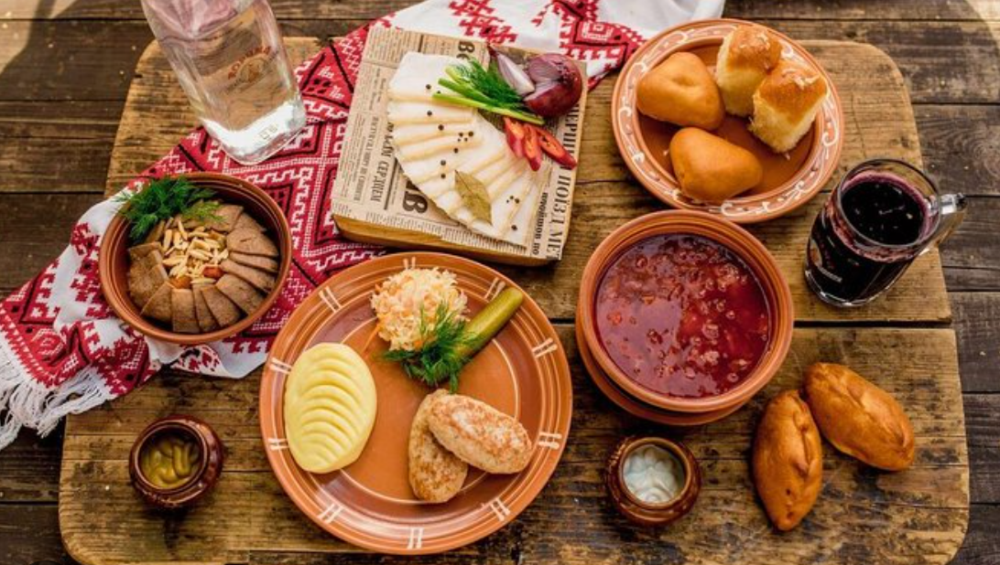

Doživi
Explore
Rožaje
Probaj Rožaje kroz miris domaće hrane, planinski vazduh i gostoprimstvo koje se pamti. Explore Rožaje through the scent of homemade food, mountain air and hospitality you'll never forget.
Smještaji Accommodations
Pronađi savršen smještaj u Rožajama — od udobnih hotela do planinarskih bungalova u prirodi. Find the perfect accommodation in Rožaje — from comfortable hotels to mountain bungalows in nature.
Pregled Smještaja View AccommodationsTradicionalna Jela Traditional Dishes
Upoznajte autentičnu kuhinju Rožaja — pite, tarhana, bosanski lonac i druge planinske specijalitete. Discover the authentic cuisine of Rožaje — pita, tarhana, Bosnian pot and other mountain specialties.
Vidi Jela View DishesRestorani Restaurants
Pronađite najbolje restorane u Rožajama — od tradicionalnih ćevabdžinica do elegantnih etno restorana. Find the best restaurants in Rožaje — from traditional grill houses to elegant ethno restaurants.
Vidi Restorane View RestaurantsO Rožajama About Rožaje
Saznajte više o gradu pod Hajlom — istorija, kultura, priroda i sve što Rožaje čini posebnim. Learn more about the city beneath Hajla — history, culture, nature and everything that makes Rožaje special.
Upoznaj Grad Explore the City
Smještaj u
Rožajama
Accommodation in
Rožaje
 Centar grada
City Centre
Centar grada
City Centre
Moderan hotel u srcu Rožaja s 33 smještajne jedinice, wellness centrom, unutrašnjim bazenom, saunom i vlastitim restoranom. Modern hotel in the heart of Rožaje with 33 accommodation units, wellness centre, indoor pool, sauna and own restaurant.
Rezerviši Book now 3 km od centra
3 km from centre
3 km od centra
3 km from centre
Smješten na Suhom Polju, 3 km od centra Rožaja, na raskrsnici prema planini Hajla i izvorima Ibra. Podzemni parking za 100 vozila, banjket sala i vlastiti restoran. U blizini ski-centra Turjak. Located in Suho Polje, 3 km from Rožaje centre, at the crossroads towards Hajla mountain and the springs of the Ibar. Underground parking for 100 vehicles, banquet hall and own restaurant. Near the Turjak ski resort.
Rezerviši Book now
Resort · Bungalovi Resort · BungalowsPlaninski resort na 1.070 m n.v. sa 36 smještajnih jedinica — bungalovi za 4 osobe, kuće za 6 i planinarskih koliba. Dva restorana, dječije igralište i bicikli u kompleksu. Mountain resort at 1,070 m a.s.l. with 36 accommodation units — bungalows for 4, houses for 6 and mountain cabins. Two restaurants, a children's playground and bikes on site.
Rezerviši Book now
Magistrala Main RoadModeran hotel uz magistralu u Rožajama s komfornim sobama, vlastitim restoranom i konferencijskim sadržajima. Okružen borovom šumom. Modern hotel on the main road in Rožaje with comfortable rooms, own restaurant and conference facilities. Surrounded by pine forest.
Posjeti stranicu Visit page
Restorani koje
moraš posjetiti
Restaurants you
must visit

Legenda od 1989. Legend since 1989Kero's ćevapi su legendarni u čitavoj Crnoj Gori — ručno miješano meso, svježe pečen somun i domaći prelivi uz dekoro od originalnih uljanih slika. Kero's ćevapi are legendary throughout Montenegro — hand-mixed meat, freshly baked somun bread and homemade sauces, adorned with original oil paintings.
 #1 u Rožaju
#1 in Rožaje
#1 u Rožaju
#1 in Rožaje
Vrhunski lounge bar ocijenjen brojem jedan u Rožaju — svježa kafa, odlična hrana i moderna atmosfera koja oduševljava svaki put. Top-rated lounge bar ranked number one in Rožaje — fresh coffee, excellent food and a modern atmosphere that impresses every time.

Porodičan FamilyProstran porodičan restoran s bogatim menijim — od domaćih čorbi i jela u loncu do svježeg roštilja i sezonskih specijaliteta. A spacious family restaurant with a rich menu — from homemade soups and stews to fresh grilled dishes and seasonal specialties.

Etno · Tradicija Ethno · TraditionAutentičan etno ambijent s tradicionalnom domaćom kuhinjom — osjetite duh starih vremena uz miris dima, pite i bosanskog lonca. Authentic ethno setting with traditional home cuisine — feel the spirit of old times with the scent of smoke, pita and Bosnian pot.

Planinski MountainRestoran u podnožju Hajle — najvećeg vrha Rožaja na 2403 m. Planinska svježina, domaće meso i pogled koji oduzima dah. Restaurant at the foot of Hajla — the highest peak of Rožaje at 2,403 m. Mountain freshness, homemade meat and a breathtaking view.
Rožaje ima
svoju priču
Rožaje has
its own story
Rožaje je grad okružen planinama, doma Hajle (2.403 m) — najvišeg vrha Rožajske opštine. Ta planinska veličanstvenost oduvijek je oblikovala lokalnu kuhinju i način života: svježe, domaće, hranjivo. Naš cilj je da tu tradiciju dovedemo na dohvat ruke svakome — bilo da si mještanin ili putnik namjernik. Rožaje is a city surrounded by mountains, home to Hajla (2,403 m) — the highest peak of Rožaje municipality. That mountain grandeur has always shaped the local cuisine and way of life: fresh, homemade, nourishing. Our goal is to bring that tradition within reach of everyone — whether you are a local or a traveller passing through.


